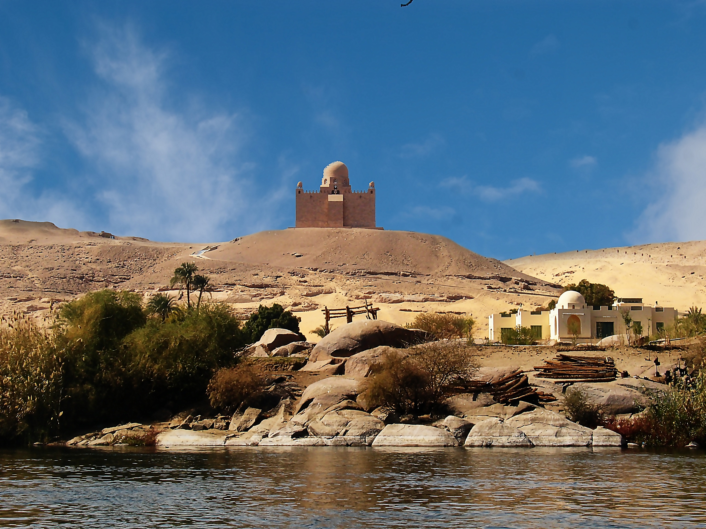

|  |
Aswan Located about 899 km south from Cairo, Aswan is a serene Nile Valley destination where the Nile is more majestic than anywhere else, flowing through granite rocks, and round emerald islands covered in palm groves and tropical plants. It is considered as an all-time favourite winter destination. Moreover, you'll be surprised to see how many monuments and sites this small city has to offer. Consider sailing to the temple of Philae, seeing the Agha Khan Mausoleum and taking an excursion to St. Simeon Monastery. Egypt's sunniest southern city is the perfect destination to stroll and relax in a magical cultural setting: wander down the broad walkway, locally known as the corniche, to watch feluccas slowly sailing the Nile then stop at one of the floating restaurants to enjoy Nubian music and freshly caught fish. Aswan offers a splendid view of the Nile and is a great starting point for a Nile cruise. Aswan also offers a rich cultural experience; you will get to know Nubian culture and shop for spices, henna tattoos, souvenirs and African handmade goods at the Aswan souk. The word Aswan derives in fact from the Ancient Egyptian word Soun meaning souk or trade. It has earned its name thanks to the city strategic position, on the trade route linking the North of Egypt to its South. Since Ancient times, Aswan has also been known for its environmental therapy: burying the aching parts of your body in Aswan sand gives valuable results and can help relieving you from stubborn ailments such as rheumatism, arthritis, joint edema and skin inflammation. The town climate is also known to have great relaxing and rejuvenating properties.The best times to visit Aswan are May and September, summers are scorching, and winter temperatures have been known to reach 27 during the day, with cold nights. |